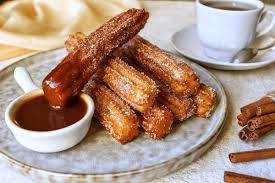

Ingredientes:
- 1 taza de harina
- 1 taza de agua
- 2 cucharadas de mantequilla
- 1 cucharada de azúcar
- 1 pizca de sal
- Aceite para freír
- ½ taza de azúcar y canela para espolvorear
- 200g de chocolate oscuro
- ½ taza de leche
Preparación:
- Calienta el agua con la mantequilla, azúcar y sal hasta que hierva.
- Agrega la harina y mezcla hasta formar una masa homogénea.
- Coloca la masa en una manga pastelera con boquilla rizada.
- Forma los churros y fríelos en aceite caliente hasta que estén dorados.
- Espolvorea con azúcar y canela.
- Derrite el chocolate con la leche y sirve caliente.
- Disfruta tus churros con chocolate. 🍩